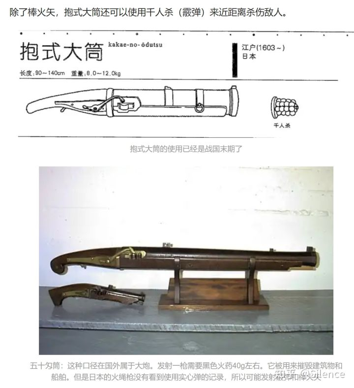
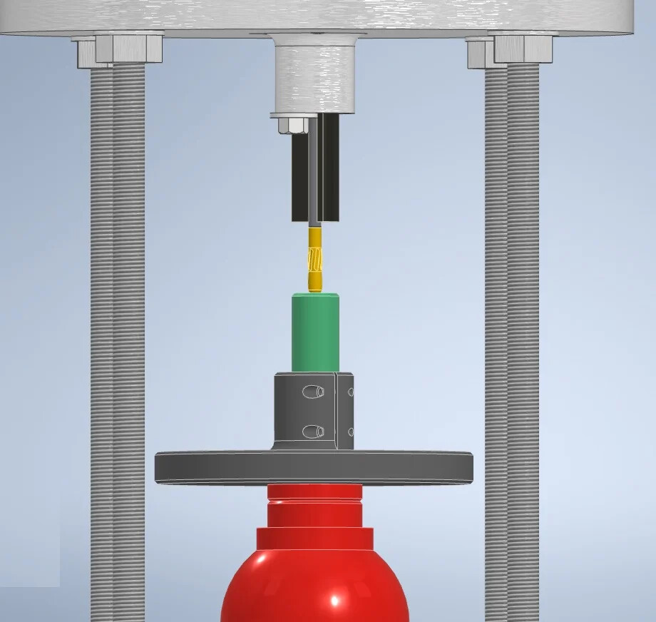

如果你跟厂子里，开5000一月的师傅说，你要用3D打印来做这玩意：
他会觉得你在侮辱他；
有线锯，台虎钳，ABS塑料棒和钢管儿，劳资分分钟去二楼车间整一个出来；
不过比较有启示性的点在于，貌似这玩意是电池打火，因此那个很累赘的扳机就可以取消了；
一个按动开关搞定；
再狠一点，保险+松发开关，即使被击毙也能射的出去；
其次，既然预料到，突然动手的时间点只能开两枪，那要啥填装；
8磅鹰炮咋装，它就咋装；
有一说一，真特么复古，手抱大筒；

图源：https://www.bilibili.com/read/cv9908904/ 日本铁炮的种类【伍】：抱式大筒 作者：强哥450


图源：https://www.bilibili.com/read/cv9908904/ 日本铁炮的种类【伍】：抱式大筒 作者：强哥450
崇祯皇帝1628~1644，那这个大筒应该在他之前。。。木匠大佬朱由校？
另外，看这烟雾就知道，肯定不是正经弹药；
买两挂鞭炮，抠出火药来，应该比关宁铁骑，或者丰臣秀吉他们用的要好很多；
做膛线用的冲子（press）

一种膛线冲子
Abstract
本发明公开了一种膛线冲子，它包含膛线冲子本体(1)，该膛线冲子本体(1)整体为圆柱形结构，其上顶面设有与其同心的圆坠顶(2)，其下底面向内开设有与其同心的顶槽(3)，所述膛线冲子本体(1)的外圆面上分别逐级设有第一级线模(4)，第二级线模(5)和第三级线模(6)，其中，所述第二级线模(5)的外径略大于第一级线模(4)的外径，所述第三级线模(6)的外径略大于第二级线模(5)。本发明结构简单，操作更加方便，在使用时，可以使膛线冲子在枪管内的推进逐级缓慢吃线，提高了进给时的顺畅，降低了冲子崩裂的风险，且由于线冲子的底部设有顶槽，便于顶杆与膛线冲子的转动配合，有效的防止了顶杆伤害膛线冲子的现象。
名词解释：
冲模
压力容器
金属法兰
爆轰
爆燃
铣床
车床
钻
镗刀
铰刀
这里有SMG的图纸，在美国自己做SMG也是要坐牢的。
书单：
日前，钦州市钦北区人民检察院依法对陈某浩涉嫌宣扬恐怖主义、极端主义罪一案提起公诉，这是钦州市检察机关提起公诉的首例涉嫌恐怖主义、极端主义犯罪案件。
经依法审查查明：2017年7月，被告人陈某浩通过翻墙软件在境外的网站上下载了一部名为《无政府主义烹饪手册》的英文版电子书，并通过谷歌的翻译软件将该书翻译成中文，并命名为《黑色行动手册》(中文原始版本)。《无政府主义烹饪手册》的内容主要是关于反对政府的行为，涉及制造爆炸、枪击、绑架、暗杀等恐怖活动。随后，陈某浩以此版本为基础，通过上网搜索资料并进行编写，创作出两个档次的电子书，内容较多的将其命名为(420xingd)，内容少的命名为《黑色行动手册》(新的版本)，然后自己又独立编写了另一本新的电子书(内容最少)，命名为《青年逃生手册》。之后，为了让那些胆小、懦弱的人锻炼胆量以及赚取生活费用，陈某浩通过自己的微博和微信向网友王某千、刘某麟、杨某等人推介和售卖了上述三本电子文书。2017年9月23日，公安民警在钦州市钦北区育才路2-1号陈某浩的家中将其抓获，依法扣押了涉案的电脑主机1台、手机1部、存储上述三部电子文书的U盘1个。
经认定，被告人陈某浩编写的三本电子书的内容涉及大量爆炸物品、枪支、重大杀伤性武器的制造和使用方法，煽动、教唆他人以绑架、强奸、杀人、袭击等暴力极端手段危害和剥夺他人生命，制造社会恐慌，具有极强的恐怖主义、极端主义性质，具有很强的导向性和煽动性，极易引导人的心理和行为走向。
该院认为，被告人陈某浩以制作、出售宣扬恐怖主义、极端主义书籍的方式宣扬恐怖主义、极端主义，其行为已构成宣扬恐怖主义、极端主义罪，应当以该罪追究其刑事责任，遂依法提起公诉。
5HLBNxgvrZNBQZyqtJXWCmx1iq9.pdf